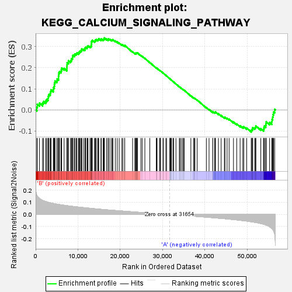
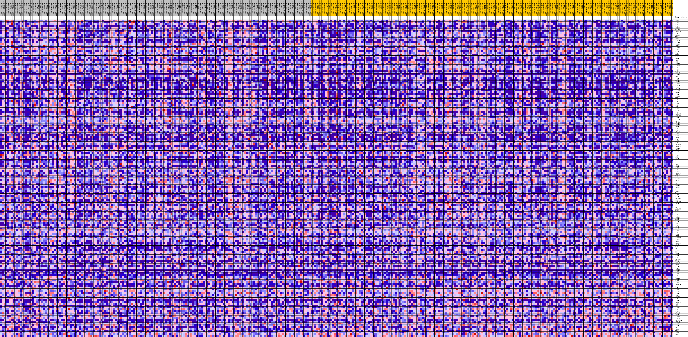
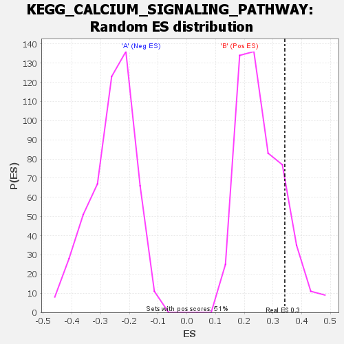

| | | Dataset | my.my.cls#B_versus_A.my.cls#B_versus_A_repos |
| Phenotype | my.cls#B_versus_A_repos |
| Upregulated in class | B |
| GeneSet | KEGG_CALCIUM_SIGNALING_PATHWAY |
| Enrichment Score (ES) | 0.34100276 |
| Normalized Enrichment Score (NES) | 1.3231875 |
| Nominal p-value | 0.13529412 |
| FDR q-value | 0.4955396 |
| FWER p-Value | 0.919 |
Table: GSEA Results Summary

Fig 1: Enrichment plot: KEGG_CALCIUM_SIGNALING_PATHWAY
Profile of the Running ES Score & Positions of GeneSet Members on the Rank Ordered List
| SYMBOL | TITLE | RANK IN GENE LIST | RANK METRIC SCORE | RUNNING ES | CORE ENRICHMENT | | 1 | PLCG1 | na | 287 | 0.159 | 0.0121 | Yes |
| 2 | CHRM3 | na | 397 | 0.150 | 0.0265 | Yes |
| 3 | MYLK3 | na | 905 | 0.132 | 0.0318 | Yes |
| 4 | NTSR1 | na | 1630 | 0.117 | 0.0317 | Yes |
| 5 | CAMK2A | na | 1860 | 0.113 | 0.0399 | Yes |
| 6 | TBXA2R | na | 2380 | 0.107 | 0.0423 | Yes |
| 7 | CACNA1E | na | 2607 | 0.104 | 0.0496 | Yes |
| 8 | TRPC1 | na | 2913 | 0.101 | 0.0552 | Yes |
| 9 | ADORA2A | na | 2999 | 0.101 | 0.0646 | Yes |
| 10 | HTR7 | na | 3133 | 0.099 | 0.0730 | Yes |
| 11 | PLCD4 | na | 3451 | 0.097 | 0.0779 | Yes |
| 12 | AVPR1B | na | 3535 | 0.096 | 0.0868 | Yes |
| 13 | ATP2B3 | na | 3644 | 0.095 | 0.0952 | Yes |
| 14 | PRKACA | na | 4181 | 0.091 | 0.0956 | Yes |
| 15 | SPHK1 | na | 4200 | 0.091 | 0.1051 | Yes |
| 16 | CAMK2B | na | 4397 | 0.090 | 0.1114 | Yes |
| 17 | CALM2 | na | 4437 | 0.089 | 0.1204 | Yes |
| 18 | HTR2A | na | 4482 | 0.089 | 0.1292 | Yes |
| 19 | PHKG1 | na | 4586 | 0.088 | 0.1370 | Yes |
| 20 | MYLK2 | na | 5027 | 0.085 | 0.1384 | Yes |
| 21 | NOS3 | na | 5085 | 0.085 | 0.1467 | Yes |
| 22 | PTGFR | na | 5404 | 0.083 | 0.1500 | Yes |
| 23 | TACR2 | na | 5408 | 0.083 | 0.1590 | Yes |
| 24 | PRKX | na | 5463 | 0.083 | 0.1670 | Yes |
| 25 | PDGFRB | na | 5494 | 0.083 | 0.1755 | Yes |
| 26 | CYSLTR2 | na | 5653 | 0.082 | 0.1815 | Yes |
| 27 | ITPR2 | na | 6004 | 0.080 | 0.1840 | Yes |
| 28 | PHKA2 | na | 6079 | 0.079 | 0.1913 | Yes |
| 29 | AGTR1 | na | 6152 | 0.079 | 0.1986 | Yes |
| 30 | SLC8A1 | na | 6724 | 0.076 | 0.1967 | Yes |
| 31 | CALML5 | na | 7383 | 0.073 | 0.1929 | Yes |
| 32 | PLCB1 | na | 7387 | 0.073 | 0.2008 | Yes |
| 33 | P2RX6 | na | 7407 | 0.073 | 0.2084 | Yes |
| 34 | ADCY8 | na | 7431 | 0.073 | 0.2158 | Yes |
| 35 | ATP2B2 | na | 7449 | 0.073 | 0.2234 | Yes |
| 36 | GRIN2A | na | 7741 | 0.071 | 0.2260 | Yes |
| 37 | ADRA1A | na | 7759 | 0.071 | 0.2334 | Yes |
| 38 | P2RX2 | na | 8255 | 0.069 | 0.2321 | Yes |
| 39 | ADRA1D | na | 8430 | 0.068 | 0.2365 | Yes |
| 40 | ADRA1B | na | 8481 | 0.068 | 0.2430 | Yes |
| 41 | PTGER3 | na | 8701 | 0.067 | 0.2464 | Yes |
| 42 | CCKAR | na | 8734 | 0.067 | 0.2531 | Yes |
| 43 | PRKACB | na | 8823 | 0.067 | 0.2587 | Yes |
| 44 | MYLK | na | 9167 | 0.065 | 0.2597 | Yes |
| 45 | GNAL | na | 9264 | 0.065 | 0.2650 | Yes |
| 46 | TNNC2 | na | 9581 | 0.063 | 0.2663 | Yes |
| 47 | EDNRA | na | 9755 | 0.063 | 0.2701 | Yes |
| 48 | OXTR | na | 10118 | 0.061 | 0.2703 | Yes |
| 49 | P2RX4 | na | 10284 | 0.061 | 0.2739 | Yes |
| 50 | P2RX7 | na | 10438 | 0.060 | 0.2777 | Yes |
| 51 | PDE1A | na | 10667 | 0.059 | 0.2801 | Yes |
| 52 | CHRM2 | na | 10849 | 0.059 | 0.2833 | Yes |
| 53 | CACNA1C | na | 10900 | 0.058 | 0.2887 | Yes |
| 54 | CACNA1D | na | 11304 | 0.057 | 0.2877 | Yes |
| 55 | ITPKB | na | 11644 | 0.056 | 0.2877 | Yes |
| 56 | PPP3CB | na | 11670 | 0.055 | 0.2933 | Yes |
| 57 | ADCY3 | na | 11792 | 0.055 | 0.2971 | Yes |
| 58 | LTB4R2 | na | 12133 | 0.054 | 0.2970 | Yes |
| 59 | ATP2B4 | na | 12215 | 0.054 | 0.3013 | Yes |
| 60 | PTGER1 | na | 12377 | 0.053 | 0.3042 | Yes |
| 61 | ADRB3 | na | 12840 | 0.051 | 0.3016 | Yes |
| 62 | CD38 | na | 13098 | 0.050 | 0.3025 | Yes |
| 63 | ATP2A1 | na | 13151 | 0.050 | 0.3070 | Yes |
| 64 | ADRB1 | na | 13153 | 0.050 | 0.3124 | Yes |
| 65 | HTR5A | na | 13218 | 0.050 | 0.3167 | Yes |
| 66 | CACNA1H | na | 13221 | 0.050 | 0.3220 | Yes |
| 67 | HTR4 | na | 13249 | 0.050 | 0.3270 | Yes |
| 68 | ADCY2 | na | 13390 | 0.049 | 0.3298 | Yes |
| 69 | PRKCA | na | 13897 | 0.047 | 0.3260 | Yes |
| 70 | SLC25A4 | na | 14071 | 0.047 | 0.3280 | Yes |
| 71 | CACNA1B | na | 14128 | 0.047 | 0.3321 | Yes |
| 72 | CALML6 | na | 14318 | 0.046 | 0.3337 | Yes |
| 73 | PHKG2 | na | 14680 | 0.045 | 0.3322 | Yes |
| 74 | GNA14 | na | 14792 | 0.045 | 0.3351 | Yes |
| 75 | RYR1 | na | 14911 | 0.044 | 0.3378 | Yes |
| 76 | CALM3 | na | 15438 | 0.043 | 0.3331 | Yes |
| 77 | GRPR | na | 15501 | 0.042 | 0.3366 | Yes |
| 78 | PDE1B | na | 15939 | 0.041 | 0.3333 | Yes |
| 79 | PLN | na | 16091 | 0.041 | 0.3350 | Yes |
| 80 | RYR3 | na | 16186 | 0.040 | 0.3377 | Yes |
| 81 | PLCD1 | na | 16248 | 0.040 | 0.3410 | Yes |
| 82 | LHCGR | na | 16761 | 0.039 | 0.3361 | No |
| 83 | GRIN1 | na | 17113 | 0.038 | 0.3340 | No |
| 84 | GNAS | na | 17183 | 0.037 | 0.3368 | No |
| 85 | PRKACG | na | 17521 | 0.036 | 0.3348 | No |
| 86 | CACNA1F | na | 17927 | 0.035 | 0.3314 | No |
| 87 | AVPR1A | na | 18113 | 0.035 | 0.3319 | No |
| 88 | GRM5 | na | 18248 | 0.034 | 0.3333 | No |
| 89 | PPP3CC | na | 18816 | 0.033 | 0.3268 | No |
| 90 | ADCY4 | na | 19259 | 0.032 | 0.3224 | No |
| 91 | F2R | na | 19730 | 0.030 | 0.3173 | No |
| 92 | GRM1 | na | 20365 | 0.029 | 0.3092 | No |
| 93 | PDGFRA | na | 20618 | 0.028 | 0.3078 | No |
| 94 | SLC8A2 | na | 21041 | 0.027 | 0.3032 | No |
| 95 | HRH2 | na | 21043 | 0.027 | 0.3061 | No |
| 96 | PLCG2 | na | 22904 | 0.022 | 0.2755 | No |
| 97 | NOS1 | na | 23452 | 0.020 | 0.2680 | No |
| 98 | PRKCG | na | 23529 | 0.020 | 0.2688 | No |
| 99 | HTR2B | na | 23724 | 0.020 | 0.2676 | No |
| 100 | SLC25A6 | na | 23752 | 0.020 | 0.2692 | No |
| 101 | DRD5 | na | 23876 | 0.019 | 0.2691 | No |
| 102 | CACNA1I | na | 23968 | 0.019 | 0.2696 | No |
| 103 | ADCY9 | na | 24042 | 0.019 | 0.2703 | No |
| 104 | RYR2 | na | 24860 | 0.017 | 0.2577 | No |
| 105 | ADCY7 | na | 25166 | 0.016 | 0.2540 | No |
| 106 | ADORA2B | na | 25804 | 0.014 | 0.2443 | No |
| 107 | TACR1 | na | 26972 | 0.011 | 0.2249 | No |
| 108 | DRD1 | na | 28499 | 0.008 | 0.1987 | No |
| 109 | ITPR1 | na | 28615 | 0.007 | 0.1974 | No |
| 110 | P2RX1 | na | 28679 | 0.007 | 0.1971 | No |
| 111 | BDKRB1 | na | 29266 | 0.006 | 0.1874 | No |
| 112 | TACR3 | na | 29430 | 0.005 | 0.1851 | No |
| 113 | PPP3R1 | na | 29444 | 0.005 | 0.1854 | No |
| 114 | EGFR | na | 29493 | 0.005 | 0.1851 | No |
| 115 | CHRM1 | na | 30082 | 0.004 | 0.1751 | No |
| 116 | GNA15 | na | 30180 | 0.004 | 0.1738 | No |
| 117 | PHKA1 | na | 30764 | 0.002 | 0.1637 | No |
| 118 | SPHK2 | na | 30929 | 0.002 | 0.1610 | No |
| 119 | CALM1 | na | 31704 | -0.000 | 0.1473 | No |
| 120 | CAMK4 | na | 31764 | -0.000 | 0.1462 | No |
| 121 | CHRM5 | na | 31782 | -0.000 | 0.1460 | No |
| 122 | CYSLTR1 | na | 31960 | -0.001 | 0.1429 | No |
| 123 | CAMK2G | na | 32105 | -0.001 | 0.1405 | No |
| 124 | PLCB4 | na | 32447 | -0.002 | 0.1347 | No |
| 125 | CACNA1S | na | 32612 | -0.002 | 0.1320 | No |
| 126 | PDE1C | na | 33148 | -0.004 | 0.1229 | No |
| 127 | TRHR | na | 33936 | -0.006 | 0.1096 | No |
| 128 | ADCY1 | na | 34138 | -0.006 | 0.1067 | No |
| 129 | P2RX3 | na | 34463 | -0.007 | 0.1017 | No |
| 130 | HRH1 | na | 34785 | -0.008 | 0.0968 | No |
| 131 | PRKCB | na | 34892 | -0.008 | 0.0958 | No |
| 132 | PTAFR | na | 35108 | -0.009 | 0.0929 | No |
| 133 | HTR6 | na | 36666 | -0.013 | 0.0667 | No |
| 134 | SLC25A5 | na | 37357 | -0.014 | 0.0560 | No |
| 135 | HTR2C | na | 37456 | -0.015 | 0.0559 | No |
| 136 | SLC8A3 | na | 37640 | -0.015 | 0.0542 | No |
| 137 | PLCB2 | na | 38162 | -0.016 | 0.0468 | No |
| 138 | PPP3R2 | na | 40324 | -0.022 | 0.0109 | No |
| 139 | VDAC2 | na | 40963 | -0.024 | 0.0022 | No |
| 140 | CALML3 | na | 41850 | -0.027 | -0.0106 | No |
| 141 | P2RX5 | na | 41859 | -0.027 | -0.0079 | No |
| 142 | ERBB4 | na | 42300 | -0.028 | -0.0127 | No |
| 143 | ERBB2 | na | 42430 | -0.028 | -0.0119 | No |
| 144 | BST1 | na | 42461 | -0.028 | -0.0093 | No |
| 145 | BDKRB2 | na | 43174 | -0.031 | -0.0186 | No |
| 146 | VDAC3 | na | 43815 | -0.032 | -0.0265 | No |
| 147 | ITPKA | na | 44579 | -0.035 | -0.0362 | No |
| 148 | CACNA1A | na | 44724 | -0.035 | -0.0350 | No |
| 149 | NOS2 | na | 45216 | -0.037 | -0.0397 | No |
| 150 | PPID | na | 45702 | -0.038 | -0.0441 | No |
| 151 | ERBB3 | na | 46731 | -0.042 | -0.0578 | No |
| 152 | ATP2A2 | na | 47502 | -0.045 | -0.0665 | No |
| 153 | EDNRB | na | 48296 | -0.048 | -0.0754 | No |
| 154 | VDAC1 | na | 48935 | -0.051 | -0.0812 | No |
| 155 | PPP3CA | na | 49166 | -0.052 | -0.0797 | No |
| 156 | GNAQ | na | 49856 | -0.055 | -0.0860 | No |
| 157 | CCKBR | na | 50922 | -0.060 | -0.0983 | No |
| 158 | CACNA1G | na | 51057 | -0.061 | -0.0941 | No |
| 159 | PLCE1 | na | 51207 | -0.062 | -0.0901 | No |
| 160 | CHP2 | na | 51267 | -0.062 | -0.0844 | No |
| 161 | GRIN2C | na | 51742 | -0.065 | -0.0858 | No |
| 162 | PHKB | na | 51930 | -0.066 | -0.0820 | No |
| 163 | ADRB2 | na | 52028 | -0.066 | -0.0765 | No |
| 164 | ATP2A3 | na | 53182 | -0.075 | -0.0889 | No |
| 165 | PTK2B | na | 53860 | -0.081 | -0.0921 | No |
| 166 | GRIN2D | na | 53924 | -0.081 | -0.0844 | No |
| 167 | CAMK2D | na | 54027 | -0.082 | -0.0773 | No |
| 168 | SLC25A31 | na | 54345 | -0.086 | -0.0736 | No |
| 169 | CHRNA7 | na | 54411 | -0.087 | -0.0653 | No |
| 170 | GNA11 | na | 54461 | -0.088 | -0.0566 | No |
| 171 | ATP2B1 | na | 55271 | -0.102 | -0.0599 | No |
| 172 | PLCZ1 | na | 55779 | -0.114 | -0.0565 | No |
| 173 | PLCD3 | na | 55827 | -0.116 | -0.0448 | No |
| 174 | TNNC1 | na | 55984 | -0.122 | -0.0344 | No |
| 175 | ITPR3 | na | 56072 | -0.126 | -0.0223 | No |
| 176 | PLCB3 | na | 56203 | -0.133 | -0.0101 | No |
| 177 | CHP1 | na | 56470 | -0.161 | 0.0027 | No |
Table: GSEA details [plain text format]

Fig 2: KEGG_CALCIUM_SIGNALING_PATHWAY
Blue-Pink O' Gram in the Space of the Analyzed GeneSet

Fig 3: KEGG_CALCIUM_SIGNALING_PATHWAY: Random ES distribution
Gene set null distribution of ES for KEGG_CALCIUM_SIGNALING_PATHWAY